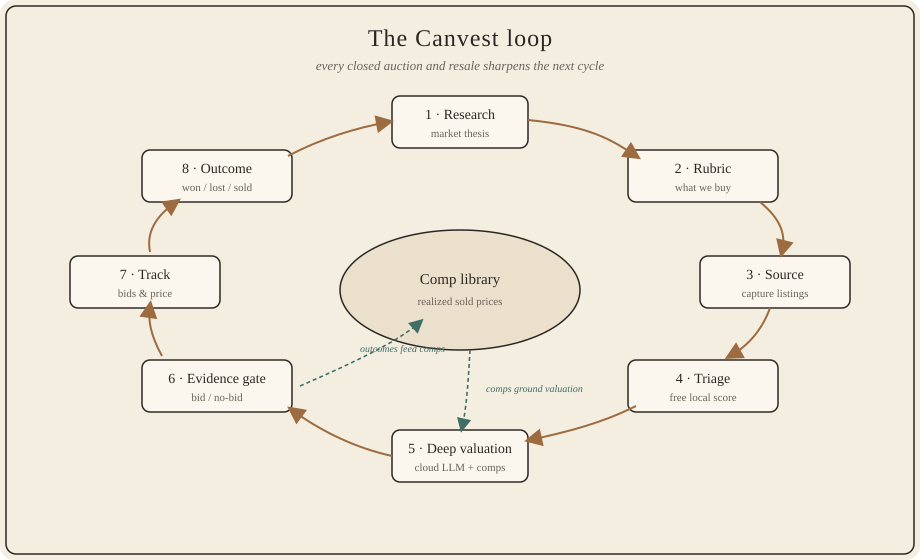
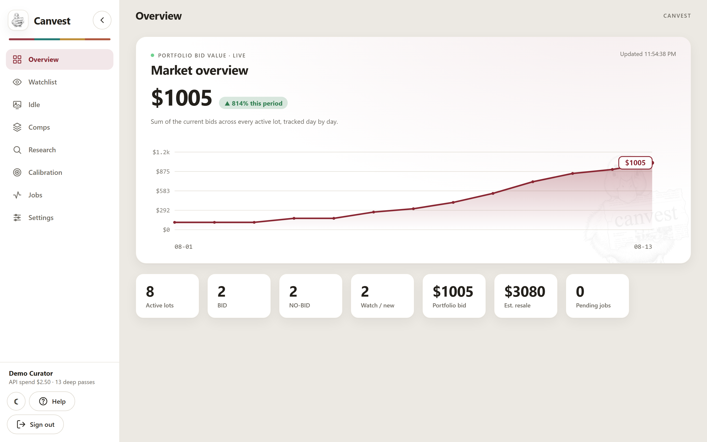
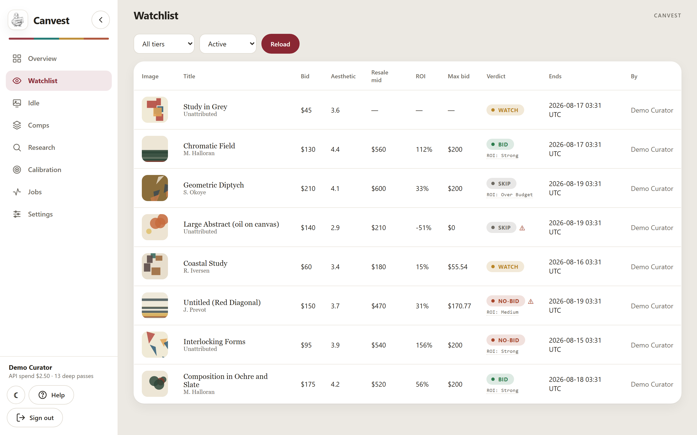
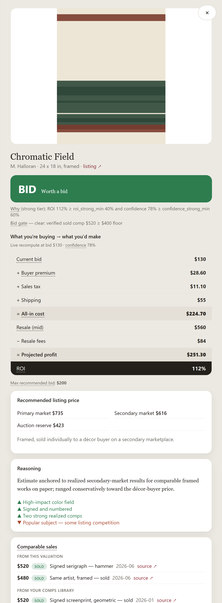
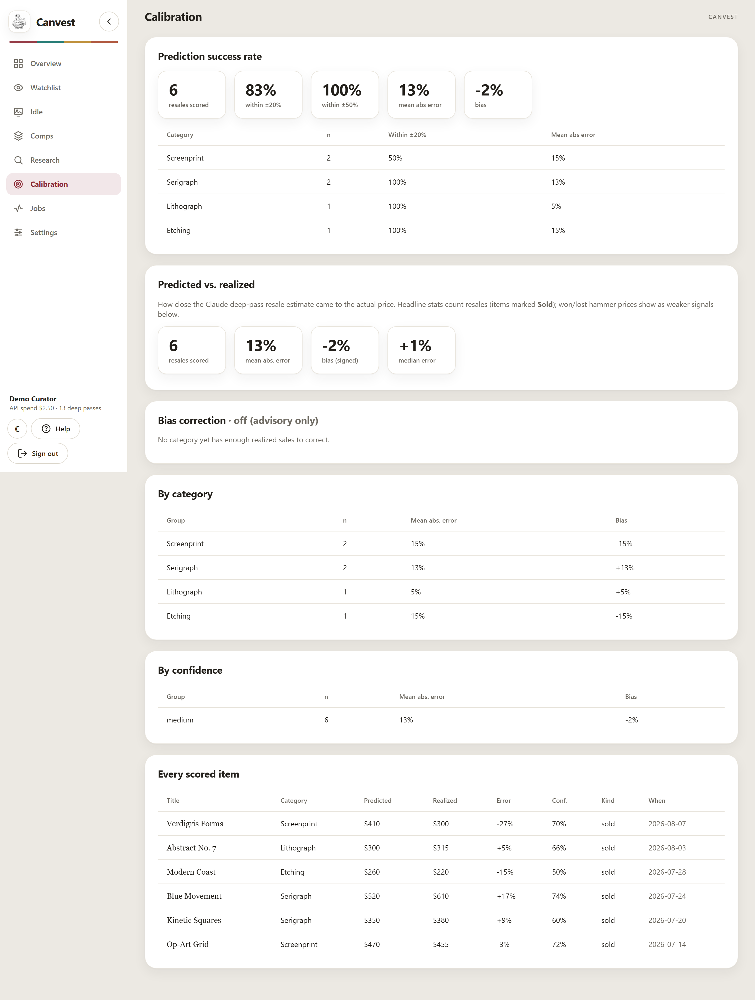

Evidence-driven art investing
Canvest sources undervalued works at online art & estate auctions and resells them for profit — with every buy/skip decision backed by real, realized sold prices, not gut feel.
A portfolio & product showcase by Joseph Cintron — what Canvest does and how I built it, not the full source.
A piece "looks like it should sell for a lot," so someone bids — then it sits, or resells for a fraction once premium, tax, shipping, and fees are counted. The people who profit aren't the ones with the best eye. They're the ones with the best evidence and discipline. Canvest turns that into software.
Each cycle feeds the next: what actually sold becomes the evidence that sharpens the next valuation. That compounding accuracy is the moat.

Build an evidence-backed thesis, then a versioned rubric for what to buy.
Capture listings, then score every one for free on a local model.
For the shortlist, estimate framed resale and cite realized comps.
Bid only when a verified realized comp backs the number.
Live ROI as bids move; log what was won, lost, and resold.
Measure predicted vs. realized and let accuracy compound.
The heart of the method. A strong ROI on paper means nothing if the resale figure rests on no real sold comparable. So the tier stays pure economics — and the verdict adds a hard gate.
| Verdict | Meaning |
|---|---|
| BID | Biddable economics and a verified realized comp clears the floor. |
| NO-BID | Good ROI on paper, but no qualifying realized comp — pass. This is the discipline that protects you. |
| WATCH | Positive but sub-target, or not yet valued. |
| SKIP | Projected loss, or over budget. |
A demo instance populated with synthetic data — no real listings, artists, or prices.




I designed and built Canvest end to end as a case study in taking an open-ended, quantitative problem from a hypothesis to a validated, self-hosted system. For research opportunities, collaboration, or a walkthrough, get in touch via my GitHub profile.
Read the methodology GitHub profile